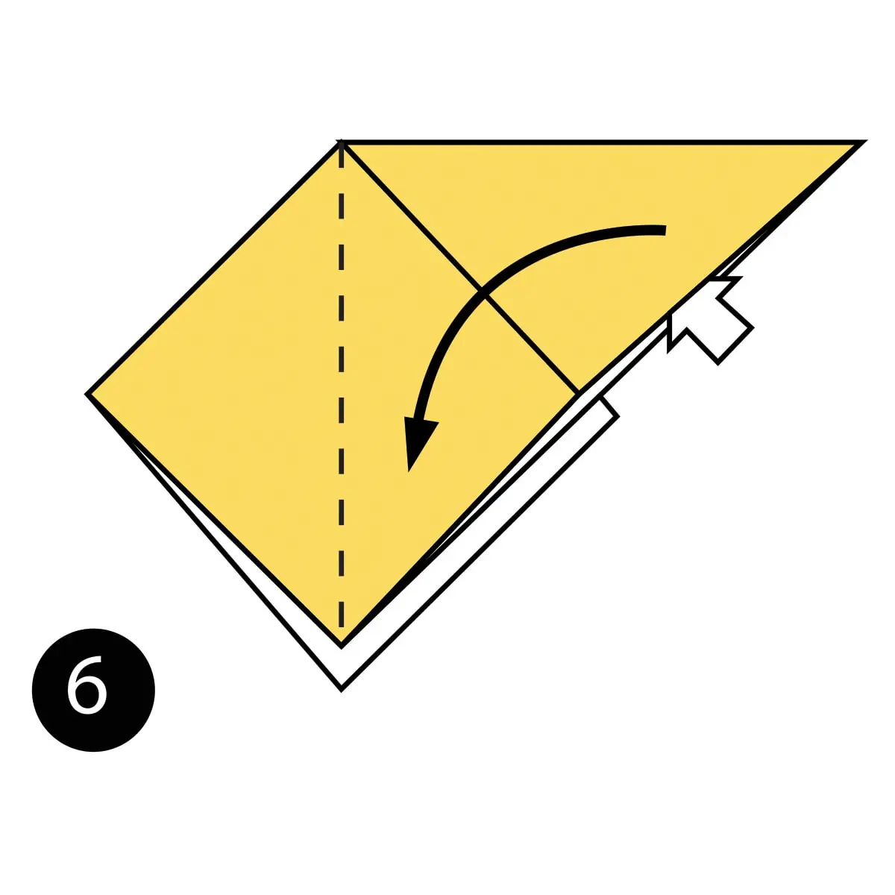
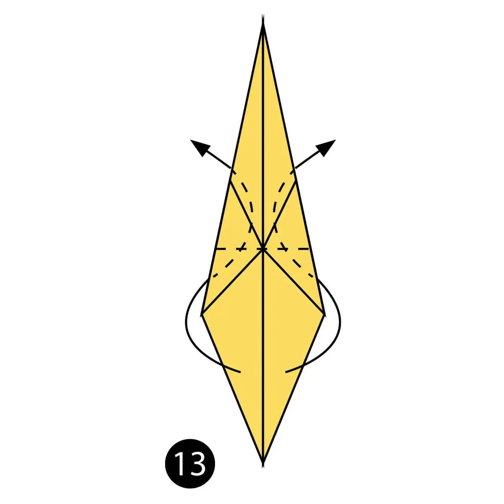

Fold paper in Half

Fold paper in Half again

Open the top flap of paper over to the right.

Squash fold this flap down

Turn the paper over
Open the top flap of paper over to the left and Squash Fold it down.

Fold and Unfold the sides and the top along the dotted lines. You’ll use these creases in the next step.

Open up the top layer of paper and fold it up using the crease from the previous step.

Fold in both sides along the existing creases making a Petal Fold.

Turn the paper over.

Repeat steps 7-9 on this side.

Fold both sides to the centre along the dotted lines. Then repeat on the other side.
Inside Reverse Fold up both sides of the paper

Reverse Fold the back part down to make the back legs.

Fold the top flap of paper down and repeat on the other side to make the front legs.

Reverse Fold the tip down to make the head.

Inside Reverse Fold the tip of the head.

Fold the back of the leg inside the model along the dotted line. Repeat on the other side.